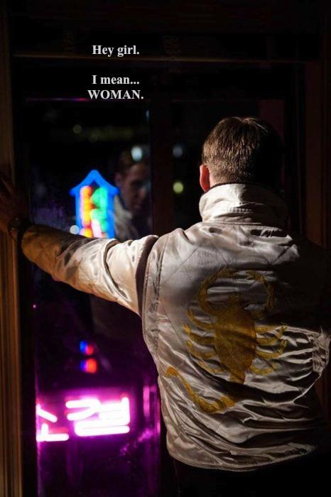
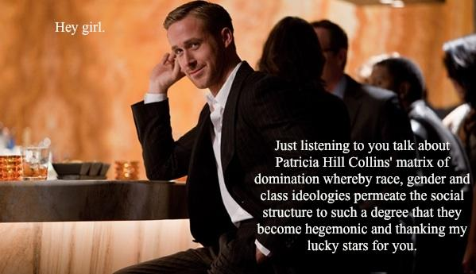
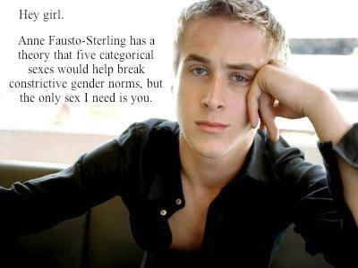

He's Literally Me: A Photobook and Anthology of Ryan Gosling
Feminist Ryan Gosling from Drive (2011) (He's Literally Me)



saymyname13
HELLO all, I'm Noah. Welcome to the Gosblog, your homepage for all things RYGOS! Browse at your own leisure :0